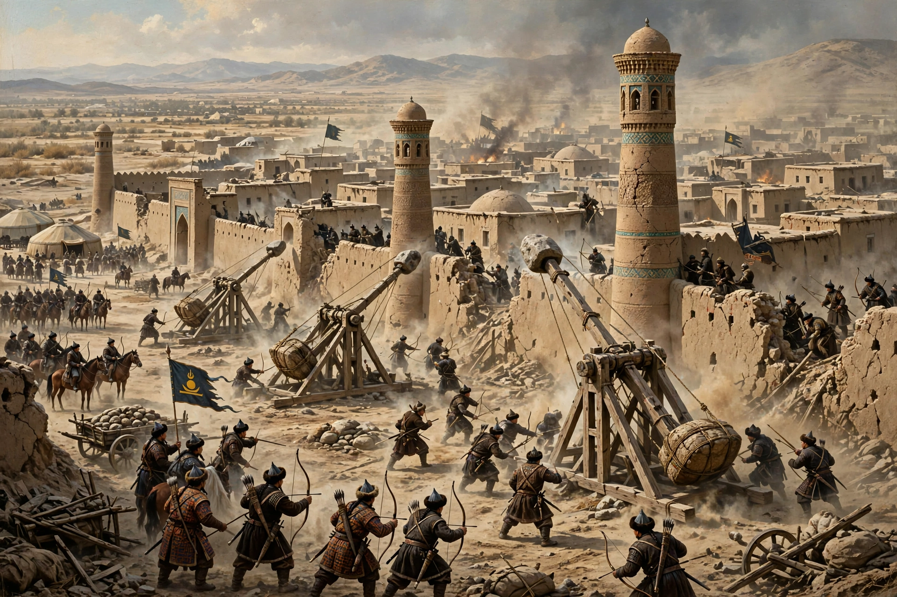

Mongol conquest of the Khwarazmian Empire
| Mongol conquest of Persia and Transoxiana | |
|---|---|
| Date | 1219 – 1221 |
| Location | Central Asia, Persia, Afghanistan (Khwarazmian Empire) |
| Result | Decisive Mongol victory; Khwarazmian Empire destroyed and annexed |
| Belligerents | Mongol Empire vs. Khwarazmian Empire |
| Commanders | Genghis Khan, Jebe, Subutai, Tolui, Chagatai, Ögedei · Muhammad II of Khwarazm, Jalal al-Din Mangburni |

The Mongol conquest of the Khwarazmian Empire (1219–1221) was the invasion of the empire ruled by Shah Ala al-Din Muhammad II by the Mongol forces of Genghis Khan. In a campaign lasting barely two years, the Mongols destroyed one of the largest states of the Islamic world, captured its great cities — Bukhara, Samarkand, Herat, Nishapur and Merv — and inflicted destruction on a scale that contemporaries described as a catastrophe for civilisation in Persia and Central Asia.
Causes
Relations between Genghis Khan and the Khwarazmshah were initially commercial: the Mongols sought trade with the empire after their conquest of Western Xia and the Kara-Khitai. In 1218 a Mongol caravan of Muslim merchants was seized and massacred at the frontier town of Otrar by its governor, Inalchuq, who accused them of spying; the Shah refused to punish him or make restitution. When Genghis sent envoys demanding redress, Muhammad had the chief envoy killed and the others humiliated. Genghis, reportedly declaring that war was now inevitable, mobilised his army and turned west, leaving the Jin war in other hands.
The invasion
In autumn 1219 Mongol armies crossed the Syr Darya in several corps, exploiting the Shah's fatal decision to disperse his forces among his cities rather than concentrate them in the field. Otrar was besieged and destroyed; its governor was executed. Bukhara fell in February 1220 after a brief siege, its population driven out and the city burned. Samarkand, the capital, fell in March 1220; its artisans were deported to Mongolia and much of the city demolished. Genghis then crossed the Amu Darya into Khorasan, while Jebe and Subutai pursued the fleeing Shah westward; Muhammad II died, destitute, on an island in the Caspian Sea in the winter of 1220–21.
In 1221 Tolui took Merv, where the population was massacred almost in its entirety, and Nishapur; Herat surrendered, then revolted and was destroyed on a second capture. The Shah's son Jalal al-Din Mangburni rallied an army and won a victory at Parwan, but was crushed by Genghis himself at the Battle of the Indus in November 1221, escaping by swimming the river. The ancient Khwarazmian capital, Gurganj (Konye-Urgench), fell after one of the most bitter sieges of the campaign.
Aftermath
The conquest shattered the urban and agricultural civilisation of Transoxiana and Khorasan. Contemporary chroniclers gave enormous figures for the dead — hundreds of thousands at Merv and Nishapur alone — and irrigation systems destroyed in the war were in places never repaired. The surviving population was taxed, conscripted and in part deported east. The campaign opened Persia and the lands beyond to the Mongol Empire, and Jebe and Subutai's subsequent raid around the Caspian carried Mongol arms as far as the Caucasus and the Rus' principalities. Jalal al-Din continued to resist in Persia until his death in 1231.
See also
Mongol conquest of the Jin dynasty · Jalal al-Din Mangburni · Samarkand · Ilkhanate